Chapter 13 Practicals (Temporary)
Practical 1
data(faithful)
w = faithful$waiting
d = faithful$eruptions
plot(d, w, col = "darkgrey", xlab = "Duration of Eruptions (m)", ylab = "Waiting Time (m)", main = "Faithful Geyser", bty = 'l', pch = 16)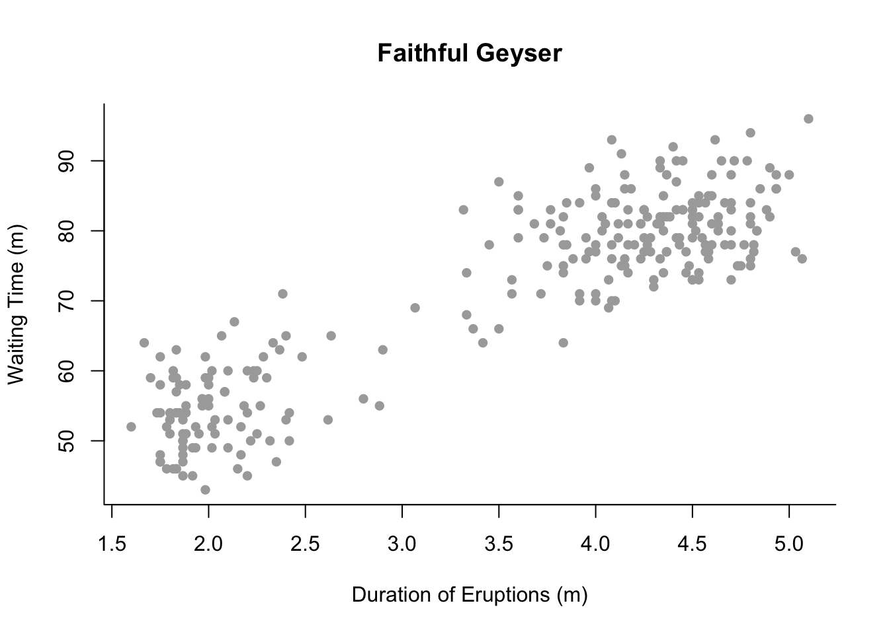
cor(w, d) #Pearson correlation coefficient## [1] 0.9008112model = lm(w ~ d)
coef(model)## (Intercept) d
## 33.47440 10.72964beta0hat <- coef(model)[1]
beta1hat <- coef(model)[2]
lsq.Q = sum(resid(model)^2)
summary(model)##
## Call:
## lm(formula = w ~ d)
##
## Residuals:
## Min 1Q Median 3Q Max
## -12.0796 -4.4831 0.2122 3.9246 15.9719
##
## Coefficients:
## Estimate Std. Error t value Pr(>|t|)
## (Intercept) 33.4744 1.1549 28.98 <2e-16 ***
## d 10.7296 0.3148 34.09 <2e-16 ***
## ---
## Signif. codes: 0 '***' 0.001 '**' 0.01 '*' 0.05 '.' 0.1 ' ' 1
##
## Residual standard error: 5.914 on 270 degrees of freedom
## Multiple R-squared: 0.8115, Adjusted R-squared: 0.8108
## F-statistic: 1162 on 1 and 270 DF, p-value: < 2.2e-16#coef estimates: w = 33.5 + 10.7 d
#coef std errors: 1.15 and 0.31 respectively
#residual std error: 5.914
#regression R^2: 0.8115
#t-value column is t-test associated with testing significance of params. as p-values are small, both parameters are significant
se = summary(model)$sigma
rsq <- summary(model)$r.squared
cor(w, d)^2## [1] 0.8114608se.beta1 <- summary(model)$coefficients[2,2]
t.beta1 <- unname((beta1hat-0)/se.beta1)
n <- length(w)
#p-value
2*(1-pt(t.beta1, n-2)) # df = n-2## [1] 0#Confidence Interval
beta1hat + c(-1,1) * qt(0.975,n-2) * se.beta1## [1] 10.10996 11.34932confint(model, level = 0.95)## 2.5 % 97.5 %
## (Intercept) 31.20069 35.74810
## d 10.10996 11.34932#confidence interval
predict(model, newdata = data.frame(d = 3), interval = "confidence", level = 0.95)## fit lwr upr
## 1 65.66332 64.89535 66.4313#prediction interval
predict(model, newdata = data.frame(d = 3), interval = "prediction", level = 0.95)## fit lwr upr
## 1 65.66332 53.99458 77.33206par(mfrow=c(1,2))
plot(y=resid(model), x=fitted(model), col="darkgrey", xlab="Fitted Values", ylab="Residuals", bty='l', pch=16)
plot(y=resid(model), x=d, col="darkgrey", xlab="Fitted Values", ylab="Duration of Eruptions (m)", bty='l', pch=16)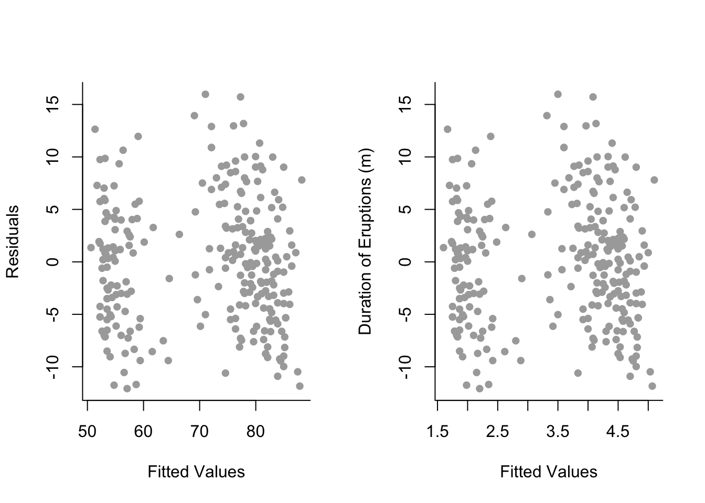
par(mfrow=c(1,2))
hist(resid(model))
qqnorm(resid(model))
par(mfrow=c(1,1))Practical 1
library("faraway")## Warning: package 'faraway' was built under R version 4.1.2names(fat)## [1] "brozek" "siri" "density" "age" "weight" "height" "adipos"
## [8] "free" "neck" "chest" "abdom" "hip" "thigh" "knee"
## [15] "ankle" "biceps" "forearm" "wrist"head(fat)## brozek siri density age weight height adipos free neck chest abdom hip
## 1 12.6 12.3 1.0708 23 154.25 67.75 23.7 134.9 36.2 93.1 85.2 94.5
## 2 6.9 6.1 1.0853 22 173.25 72.25 23.4 161.3 38.5 93.6 83.0 98.7
## 3 24.6 25.3 1.0414 22 154.00 66.25 24.7 116.0 34.0 95.8 87.9 99.2
## 4 10.9 10.4 1.0751 26 184.75 72.25 24.9 164.7 37.4 101.8 86.4 101.2
## 5 27.8 28.7 1.0340 24 184.25 71.25 25.6 133.1 34.4 97.3 100.0 101.9
## 6 20.6 20.9 1.0502 24 210.25 74.75 26.5 167.0 39.0 104.5 94.4 107.8
## thigh knee ankle biceps forearm wrist
## 1 59.0 37.3 21.9 32.0 27.4 17.1
## 2 58.7 37.3 23.4 30.5 28.9 18.2
## 3 59.6 38.9 24.0 28.8 25.2 16.6
## 4 60.1 37.3 22.8 32.4 29.4 18.2
## 5 63.2 42.2 24.0 32.2 27.7 17.7
## 6 66.0 42.0 25.6 35.7 30.6 18.8summary(fat)## brozek siri density age
## Min. : 0.00 Min. : 0.00 Min. :0.995 Min. :22.00
## 1st Qu.:12.80 1st Qu.:12.47 1st Qu.:1.041 1st Qu.:35.75
## Median :19.00 Median :19.20 Median :1.055 Median :43.00
## Mean :18.94 Mean :19.15 Mean :1.056 Mean :44.88
## 3rd Qu.:24.60 3rd Qu.:25.30 3rd Qu.:1.070 3rd Qu.:54.00
## Max. :45.10 Max. :47.50 Max. :1.109 Max. :81.00
## weight height adipos free
## Min. :118.5 Min. :29.50 Min. :18.10 Min. :105.9
## 1st Qu.:159.0 1st Qu.:68.25 1st Qu.:23.10 1st Qu.:131.3
## Median :176.5 Median :70.00 Median :25.05 Median :141.6
## Mean :178.9 Mean :70.15 Mean :25.44 Mean :143.7
## 3rd Qu.:197.0 3rd Qu.:72.25 3rd Qu.:27.32 3rd Qu.:153.9
## Max. :363.1 Max. :77.75 Max. :48.90 Max. :240.5
## neck chest abdom hip
## Min. :31.10 Min. : 79.30 Min. : 69.40 Min. : 85.0
## 1st Qu.:36.40 1st Qu.: 94.35 1st Qu.: 84.58 1st Qu.: 95.5
## Median :38.00 Median : 99.65 Median : 90.95 Median : 99.3
## Mean :37.99 Mean :100.82 Mean : 92.56 Mean : 99.9
## 3rd Qu.:39.42 3rd Qu.:105.38 3rd Qu.: 99.33 3rd Qu.:103.5
## Max. :51.20 Max. :136.20 Max. :148.10 Max. :147.7
## thigh knee ankle biceps forearm
## Min. :47.20 Min. :33.00 Min. :19.1 Min. :24.80 Min. :21.00
## 1st Qu.:56.00 1st Qu.:36.98 1st Qu.:22.0 1st Qu.:30.20 1st Qu.:27.30
## Median :59.00 Median :38.50 Median :22.8 Median :32.05 Median :28.70
## Mean :59.41 Mean :38.59 Mean :23.1 Mean :32.27 Mean :28.66
## 3rd Qu.:62.35 3rd Qu.:39.92 3rd Qu.:24.0 3rd Qu.:34.33 3rd Qu.:30.00
## Max. :87.30 Max. :49.10 Max. :33.9 Max. :45.00 Max. :34.90
## wrist
## Min. :15.80
## 1st Qu.:17.60
## Median :18.30
## Mean :18.23
## 3rd Qu.:18.80
## Max. :21.40sum(is.na(fat)) #no missing data## [1] 0fat1 <- fat[,-c(2,3,8)] #removing 3 variables
dim(fat1)## [1] 252 15pairs(fat1)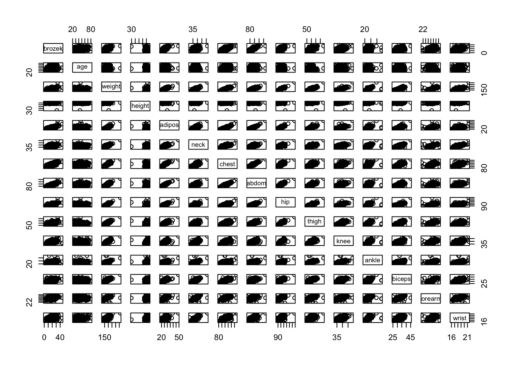
panel.cor <- function(x, y){
usr <- par("usr"); on.exit(par(usr))
par(usr = c(0, 1, 0, 1))
r <- round(cor(x, y), digits=2)
txt <- paste0(" ", r)
text(0.5, 0.5, txt, cex = 0.8)
}
upper.panel<-function(x, y){
points(x,y, pch = 20, col=2)
}
pairs(fat1,
lower.panel = panel.cor,
upper.panel = upper.panel)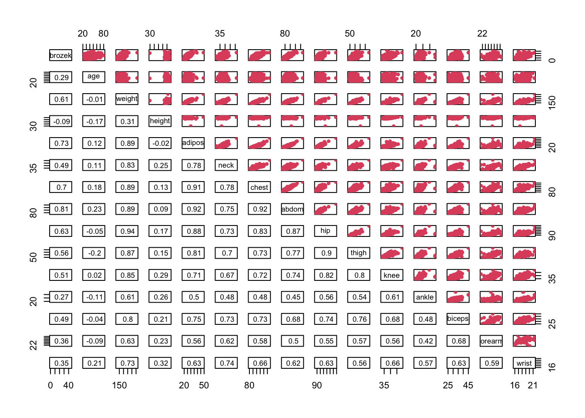
library(corrplot)## corrplot 0.92 loadedcorrplot(cor(fat1), method = "number", type = "upper", diag = FALSE)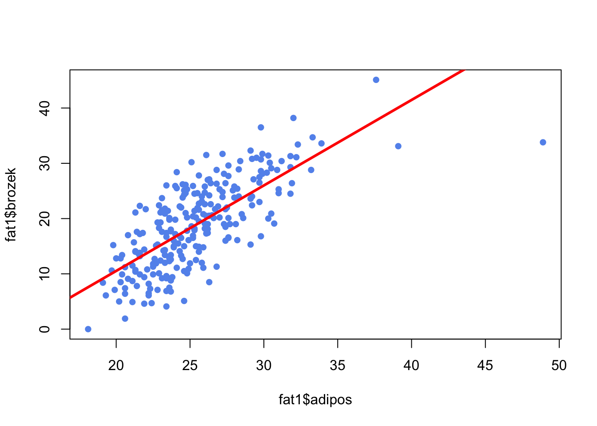
corrplot.mixed(cor(fat1), upper = "ellipse", lower = "number",number.cex = .7)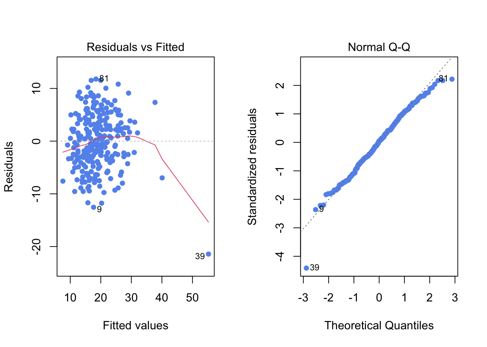
reg1 <- lm(brozek~adipos,data=fat1)
summary(reg1)##
## Call:
## lm(formula = brozek ~ adipos, data = fat1)
##
## Residuals:
## Min 1Q Median 3Q Max
## -21.4292 -3.4478 0.2113 3.8663 11.7826
##
## Coefficients:
## Estimate Std. Error t value Pr(>|t|)
## (Intercept) -20.40508 2.36723 -8.62 7.78e-16 ***
## adipos 1.54671 0.09212 16.79 < 2e-16 ***
## ---
## Signif. codes: 0 '***' 0.001 '**' 0.01 '*' 0.05 '.' 0.1 ' ' 1
##
## Residual standard error: 5.324 on 250 degrees of freedom
## Multiple R-squared: 0.53, Adjusted R-squared: 0.5281
## F-statistic: 281.9 on 1 and 250 DF, p-value: < 2.2e-16names(reg1)## [1] "coefficients" "residuals" "effects" "rank"
## [5] "fitted.values" "assign" "qr" "df.residual"
## [9] "xlevels" "call" "terms" "model"coef(reg1)## (Intercept) adipos
## -20.405082 1.546712confint(reg1, level = 0.95)## 2.5 % 97.5 %
## (Intercept) -25.067331 -15.74283
## adipos 1.365275 1.72815predict(reg1, data.frame(adipos=22), interval="confidence", level = 0.95)## fit lwr upr
## 1 13.62259 12.71416 14.53101predict(reg1, data.frame(adipos=22), interval="prediction", level = 0.95)## fit lwr upr
## 1 13.62259 3.096772 24.14841plot(fat1$adipos, fat1$brozek, pch=16, col="cornflowerblue")
abline(reg1,lwd=3,col="red")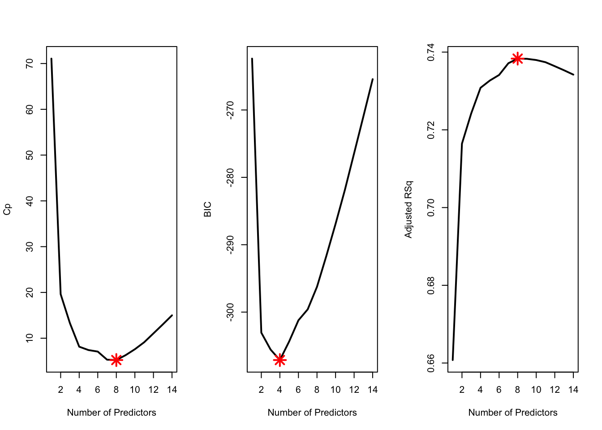
par(mfrow=c(1,2))
plot(reg1, which=1, pch=16, col="cornflowerblue")
plot(reg1, which=2, pch=16, col="cornflowerblue")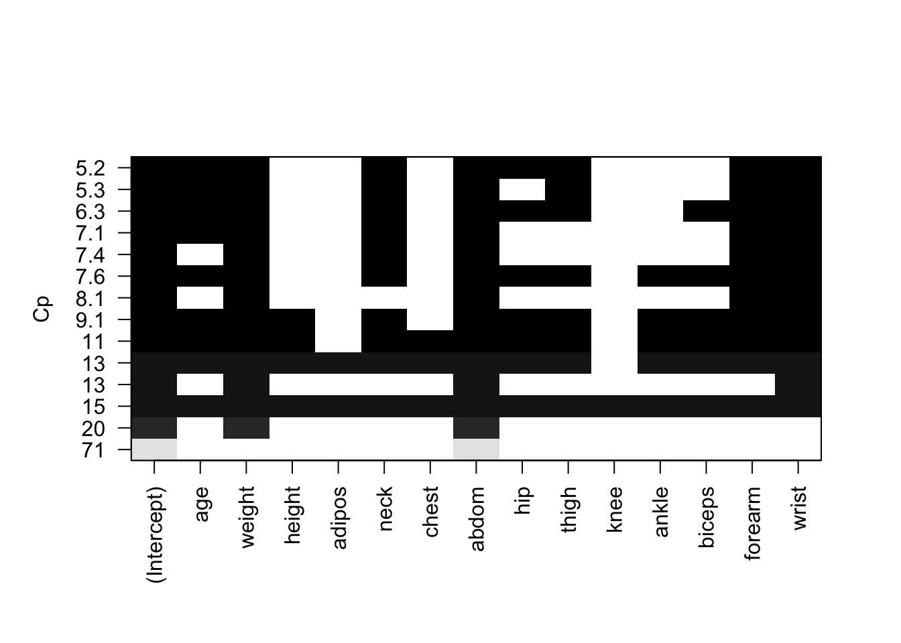
par(mfrow=c(1,1))
reg2 <- lm(brozek~adipos+age,data=fat1)
summary(reg2)##
## Call:
## lm(formula = brozek ~ adipos + age, data = fat1)
##
## Residuals:
## Min 1Q Median 3Q Max
## -20.3523 -3.6914 -0.0805 3.5328 11.6982
##
## Coefficients:
## Estimate Std. Error t value Pr(>|t|)
## (Intercept) -24.75937 2.43119 -10.184 < 2e-16 ***
## adipos 1.49481 0.08875 16.842 < 2e-16 ***
## age 0.12643 0.02569 4.921 1.57e-06 ***
## ---
## Signif. codes: 0 '***' 0.001 '**' 0.01 '*' 0.05 '.' 0.1 ' ' 1
##
## Residual standard error: 5.093 on 249 degrees of freedom
## Multiple R-squared: 0.5716, Adjusted R-squared: 0.5682
## F-statistic: 166.1 on 2 and 249 DF, p-value: < 2.2e-16reg3 <- lm(brozek~.,data=fat1)
summary(reg3)##
## Call:
## lm(formula = brozek ~ ., data = fat1)
##
## Residuals:
## Min 1Q Median 3Q Max
## -10.2573 -2.5919 -0.1031 2.9040 9.2754
##
## Coefficients:
## Estimate Std. Error t value Pr(>|t|)
## (Intercept) -1.519e+01 1.611e+01 -0.943 0.3467
## age 5.688e-02 3.003e-02 1.894 0.0594 .
## weight -8.130e-02 4.989e-02 -1.630 0.1045
## height -5.307e-02 1.034e-01 -0.513 0.6084
## adipos 6.101e-02 2.780e-01 0.219 0.8265
## neck -4.450e-01 2.184e-01 -2.037 0.0427 *
## chest -3.087e-02 9.779e-02 -0.316 0.7526
## abdom 8.790e-01 8.545e-02 10.286 <2e-16 ***
## hip -2.031e-01 1.371e-01 -1.481 0.1398
## thigh 2.274e-01 1.356e-01 1.677 0.0948 .
## knee -9.927e-04 2.298e-01 -0.004 0.9966
## ankle 1.572e-01 2.076e-01 0.757 0.4496
## biceps 1.485e-01 1.600e-01 0.928 0.3543
## forearm 4.297e-01 1.849e-01 2.324 0.0210 *
## wrist -1.479e+00 4.967e-01 -2.978 0.0032 **
## ---
## Signif. codes: 0 '***' 0.001 '**' 0.01 '*' 0.05 '.' 0.1 ' ' 1
##
## Residual standard error: 3.996 on 237 degrees of freedom
## Multiple R-squared: 0.749, Adjusted R-squared: 0.7342
## F-statistic: 50.52 on 14 and 237 DF, p-value: < 2.2e-16reg4 <- lm(brozek~.-age,data=fat1)
summary(reg4)##
## Call:
## lm(formula = brozek ~ . - age, data = fat1)
##
## Residuals:
## Min 1Q Median 3Q Max
## -9.5851 -2.7683 -0.0017 2.8892 9.0632
##
## Coefficients:
## Estimate Std. Error t value Pr(>|t|)
## (Intercept) -16.44809 16.18249 -1.016 0.3105
## weight -0.10069 0.04909 -2.051 0.0413 *
## height -0.07693 0.10323 -0.745 0.4568
## adipos 0.05355 0.27944 0.192 0.8482
## neck -0.40682 0.21865 -1.861 0.0640 .
## chest -0.02395 0.09826 -0.244 0.8076
## abdom 0.94825 0.07765 12.212 <2e-16 ***
## hip -0.22302 0.13741 -1.623 0.1059
## thigh 0.13510 0.12719 1.062 0.2892
## knee 0.10451 0.22417 0.466 0.6415
## ankle 0.11744 0.20762 0.566 0.5722
## biceps 0.17082 0.16046 1.065 0.2881
## forearm 0.37262 0.18338 2.032 0.0433 *
## wrist -1.15979 0.46969 -2.469 0.0142 *
## ---
## Signif. codes: 0 '***' 0.001 '**' 0.01 '*' 0.05 '.' 0.1 ' ' 1
##
## Residual standard error: 4.018 on 238 degrees of freedom
## Multiple R-squared: 0.7452, Adjusted R-squared: 0.7313
## F-statistic: 53.55 on 13 and 238 DF, p-value: < 2.2e-16summary(reg1)$r.sq## [1] 0.5299755summary(reg2)$r.sq## [1] 0.5716312summary(reg3)$r.sq## [1] 0.7490309summary(reg4)$r.sq## [1] 0.7452313library(car)## Warning: package 'car' was built under R version 4.1.2## Loading required package: carData## Warning: package 'carData' was built under R version 4.1.2##
## Attaching package: 'car'## The following objects are masked from 'package:faraway':
##
## logit, vifvif(reg3)## age weight height adipos neck chest abdom hip
## 2.250902 33.786851 2.256593 16.163444 4.430734 10.684562 13.346689 15.158277
## thigh knee ankle biceps forearm wrist
## 7.961508 4.828828 1.945514 3.674508 2.193390 3.379612summary(lm(brozek~chest*abdom, data=fat1))##
## Call:
## lm(formula = brozek ~ chest * abdom, data = fat1)
##
## Residuals:
## Min 1Q Median 3Q Max
## -9.9568 -3.2831 0.1953 2.8313 11.0567
##
## Coefficients:
## Estimate Std. Error t value Pr(>|t|)
## (Intercept) -95.206407 18.306007 -5.201 4.15e-07 ***
## chest 0.404148 0.187669 2.154 0.032243 *
## abdom 1.498560 0.204429 7.330 3.23e-12 ***
## chest:abdom -0.006936 0.001820 -3.810 0.000175 ***
## ---
## Signif. codes: 0 '***' 0.001 '**' 0.01 '*' 0.05 '.' 0.1 ' ' 1
##
## Residual standard error: 4.332 on 248 degrees of freedom
## Multiple R-squared: 0.6913, Adjusted R-squared: 0.6876
## F-statistic: 185.1 on 3 and 248 DF, p-value: < 2.2e-16summary(lm(brozek~adipos+I(adipos^2), data=fat1))##
## Call:
## lm(formula = brozek ~ adipos + I(adipos^2), data = fat1)
##
## Residuals:
## Min 1Q Median 3Q Max
## -12.8991 -3.4058 -0.1397 3.7930 11.3518
##
## Coefficients:
## Estimate Std. Error t value Pr(>|t|)
## (Intercept) -55.688716 7.963036 -6.993 2.46e-11 ***
## adipos 4.111738 0.561764 7.319 3.43e-12 ***
## I(adipos^2) -0.045378 0.009814 -4.624 6.05e-06 ***
## ---
## Signif. codes: 0 '***' 0.001 '**' 0.01 '*' 0.05 '.' 0.1 ' ' 1
##
## Residual standard error: 5.12 on 249 degrees of freedom
## Multiple R-squared: 0.5671, Adjusted R-squared: 0.5637
## F-statistic: 163.1 on 2 and 249 DF, p-value: < 2.2e-16summary(lm(brozek~log(adipos), data=fat1))##
## Call:
## lm(formula = brozek ~ log(adipos), data = fat1)
##
## Residuals:
## Min 1Q Median 3Q Max
## -13.5263 -3.3776 0.0751 3.8273 11.4306
##
## Coefficients:
## Estimate Std. Error t value Pr(>|t|)
## (Intercept) -119.233 7.813 -15.26 <2e-16 ***
## log(adipos) 42.820 2.419 17.70 <2e-16 ***
## ---
## Signif. codes: 0 '***' 0.001 '**' 0.01 '*' 0.05 '.' 0.1 ' ' 1
##
## Residual standard error: 5.174 on 250 degrees of freedom
## Multiple R-squared: 0.5562, Adjusted R-squared: 0.5544
## F-statistic: 313.3 on 1 and 250 DF, p-value: < 2.2e-16library("leaps")
fwd = regsubsets(brozek~., data = fat1, method = 'forward', nvmax = 14)
results = summary(fwd)
results## Subset selection object
## Call: regsubsets.formula(brozek ~ ., data = fat1, method = "forward",
## nvmax = 14)
## 14 Variables (and intercept)
## Forced in Forced out
## age FALSE FALSE
## weight FALSE FALSE
## height FALSE FALSE
## adipos FALSE FALSE
## neck FALSE FALSE
## chest FALSE FALSE
## abdom FALSE FALSE
## hip FALSE FALSE
## thigh FALSE FALSE
## knee FALSE FALSE
## ankle FALSE FALSE
## biceps FALSE FALSE
## forearm FALSE FALSE
## wrist FALSE FALSE
## 1 subsets of each size up to 14
## Selection Algorithm: forward
## age weight height adipos neck chest abdom hip thigh knee ankle biceps
## 1 ( 1 ) " " " " " " " " " " " " "*" " " " " " " " " " "
## 2 ( 1 ) " " "*" " " " " " " " " "*" " " " " " " " " " "
## 3 ( 1 ) " " "*" " " " " " " " " "*" " " " " " " " " " "
## 4 ( 1 ) " " "*" " " " " " " " " "*" " " " " " " " " " "
## 5 ( 1 ) " " "*" " " " " "*" " " "*" " " " " " " " " " "
## 6 ( 1 ) "*" "*" " " " " "*" " " "*" " " " " " " " " " "
## 7 ( 1 ) "*" "*" " " " " "*" " " "*" " " "*" " " " " " "
## 8 ( 1 ) "*" "*" " " " " "*" " " "*" "*" "*" " " " " " "
## 9 ( 1 ) "*" "*" " " " " "*" " " "*" "*" "*" " " " " "*"
## 10 ( 1 ) "*" "*" " " " " "*" " " "*" "*" "*" " " "*" "*"
## 11 ( 1 ) "*" "*" "*" " " "*" " " "*" "*" "*" " " "*" "*"
## 12 ( 1 ) "*" "*" "*" " " "*" "*" "*" "*" "*" " " "*" "*"
## 13 ( 1 ) "*" "*" "*" "*" "*" "*" "*" "*" "*" " " "*" "*"
## 14 ( 1 ) "*" "*" "*" "*" "*" "*" "*" "*" "*" "*" "*" "*"
## forearm wrist
## 1 ( 1 ) " " " "
## 2 ( 1 ) " " " "
## 3 ( 1 ) " " "*"
## 4 ( 1 ) "*" "*"
## 5 ( 1 ) "*" "*"
## 6 ( 1 ) "*" "*"
## 7 ( 1 ) "*" "*"
## 8 ( 1 ) "*" "*"
## 9 ( 1 ) "*" "*"
## 10 ( 1 ) "*" "*"
## 11 ( 1 ) "*" "*"
## 12 ( 1 ) "*" "*"
## 13 ( 1 ) "*" "*"
## 14 ( 1 ) "*" "*"RSS = results$rss
r2 = results$rsq
Cp = results$cp
BIC = results$bic
Adj_r2 = results$adjr2
criteria_values <- cbind(RSS, r2, Cp, BIC, Adj_r2)
criteria_values## RSS r2 Cp BIC Adj_r2
## [1,] 5094.931 0.6621178 71.075501 -262.3758 0.6607663
## [2,] 4241.328 0.7187265 19.617727 -303.0555 0.7164672
## [3,] 4108.183 0.7275563 13.279341 -305.5638 0.7242606
## [4,] 3994.311 0.7351080 8.147986 -307.1180 0.7308182
## [5,] 3950.628 0.7380049 7.412297 -304.3597 0.7326798
## [6,] 3913.377 0.7404753 7.079431 -301.2177 0.7341196
## [7,] 3853.214 0.7444651 5.311670 -299.5925 0.7371342
## [8,] 3819.985 0.7466688 5.230664 -296.2456 0.7383287
## [9,] 3805.075 0.7476576 6.296894 -291.7018 0.7382730
## [10,] 3793.873 0.7484005 7.595324 -286.9153 0.7379607
## [11,] 3786.200 0.7489093 9.114827 -281.8960 0.7374010
## [12,] 3785.179 0.7489771 11.050872 -276.4346 0.7363734
## [13,] 3784.367 0.7490309 13.000019 -270.9592 0.7353225
## [14,] 3784.367 0.7490309 15.000000 -265.4298 0.7342058which.min(Cp)## [1] 8which.min(BIC)## [1] 4which.max(Adj_r2)## [1] 8coef(fwd, 4)## (Intercept) weight abdom forearm wrist
## -31.2967858 -0.1255654 0.9213725 0.4463824 -1.3917662coef(fwd, 8)## (Intercept) age weight neck abdom hip
## -20.06213373 0.05921577 -0.08413521 -0.43189267 0.87720667 -0.18641032
## thigh forearm wrist
## 0.28644340 0.48254563 -1.40486912par(mfrow = c(1, 3))
plot(Cp, xlab = "Number of Predictors", ylab = "Cp", type = 'l', lwd = 2)
points(8, Cp[8], col = "red", cex = 2, pch = 8, lwd = 2)
plot(BIC, xlab = "Number of Predictors", ylab = "BIC", type = 'l', lwd = 2)
points(4, BIC[4], col = "red", cex = 2, pch = 8, lwd = 2)
plot(Adj_r2, xlab = "Number of Predictors", ylab = "Adjusted RSq",
type = "l", lwd = 2)
points(8, Adj_r2[8], col = "red", cex = 2, pch = 8, lwd = 2)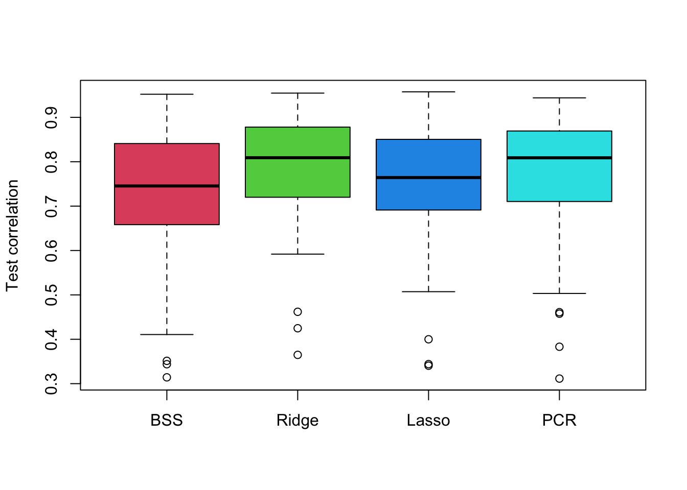
par(mfrow=c(1,1))
plot(fwd, scale = "Cp")best = regsubsets(brozek~., data = fat1, nvmax = 14)
bwd = regsubsets(brozek~., data = fat1, method = 'backward', nvmax = 14)
which.min(summary(best)$cp)## [1] 8which.min(summary(best)$bic)## [1] 4which.max(summary(best)$adjr2)## [1] 8which.min(summary(bwd)$cp)## [1] 8which.min(summary(bwd)$bic)## [1] 4which.max(summary(bwd)$adjr2)## [1] 8coef(fwd,8) ## (Intercept) age weight neck abdom hip
## -20.06213373 0.05921577 -0.08413521 -0.43189267 0.87720667 -0.18641032
## thigh forearm wrist
## 0.28644340 0.48254563 -1.40486912coef(best,8) ## (Intercept) age weight neck abdom hip
## -20.06213373 0.05921577 -0.08413521 -0.43189267 0.87720667 -0.18641032
## thigh forearm wrist
## 0.28644340 0.48254563 -1.40486912coef(bwd,8)## (Intercept) age weight neck abdom hip
## -20.06213373 0.05921577 -0.08413521 -0.43189267 0.87720667 -0.18641032
## thigh forearm wrist
## 0.28644340 0.48254563 -1.40486912coef(fwd,4) ## (Intercept) weight abdom forearm wrist
## -31.2967858 -0.1255654 0.9213725 0.4463824 -1.3917662coef(best,4) ## (Intercept) weight abdom forearm wrist
## -31.2967858 -0.1255654 0.9213725 0.4463824 -1.3917662coef(bwd,4)## (Intercept) weight abdom forearm wrist
## -31.2967858 -0.1255654 0.9213725 0.4463824 -1.3917662Practical 3
library(faraway)
?seatpos
dim(seatpos)## [1] 38 9sum(is.na(seatpos))## [1] 0cor(seatpos[,9], seatpos[,-9])## Age Weight HtShoes Ht Seated Arm Thigh
## [1,] 0.2051722 -0.640333 -0.7965964 -0.7989274 -0.7312537 -0.585095 -0.5912015
## Leg
## [1,] -0.7871685cor( seatpos[,-9] )## Age Weight HtShoes Ht Seated Arm
## Age 1.00000000 0.08068523 -0.07929694 -0.09012812 -0.1702040 0.3595111
## Weight 0.08068523 1.00000000 0.82817733 0.82852568 0.7756271 0.6975524
## HtShoes -0.07929694 0.82817733 1.00000000 0.99814750 0.9296751 0.7519530
## Ht -0.09012812 0.82852568 0.99814750 1.00000000 0.9282281 0.7521416
## Seated -0.17020403 0.77562705 0.92967507 0.92822805 1.0000000 0.6251964
## Arm 0.35951115 0.69755240 0.75195305 0.75214156 0.6251964 1.0000000
## Thigh 0.09128584 0.57261442 0.72486225 0.73496041 0.6070907 0.6710985
## Leg -0.04233121 0.78425706 0.90843341 0.90975238 0.8119143 0.7538140
## Thigh Leg
## Age 0.09128584 -0.04233121
## Weight 0.57261442 0.78425706
## HtShoes 0.72486225 0.90843341
## Ht 0.73496041 0.90975238
## Seated 0.60709067 0.81191429
## Arm 0.67109849 0.75381405
## Thigh 1.00000000 0.64954120
## Leg 0.64954120 1.00000000pairs( seatpos, pch = 16, col = 2 )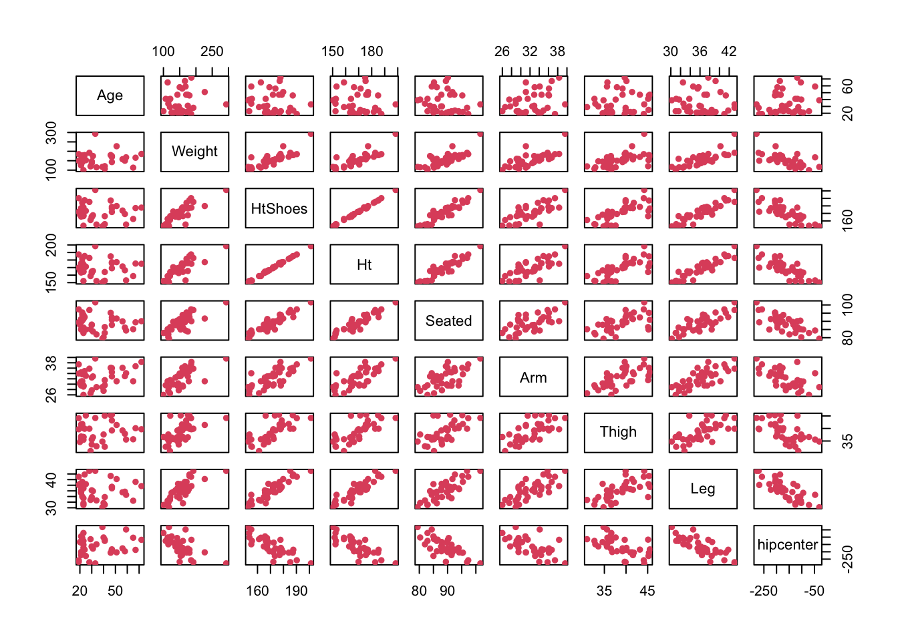
y = seatpos$hipcenter
x = model.matrix(hipcenter~., seatpos)[,-1]
library("glmnet")## Warning: package 'glmnet' was built under R version 4.1.2## Loading required package: Matrix## Loaded glmnet 4.1-6ridge = glmnet(x, y, alpha = 0, nlambda = 200)
plot(ridge, xvar = 'lambda')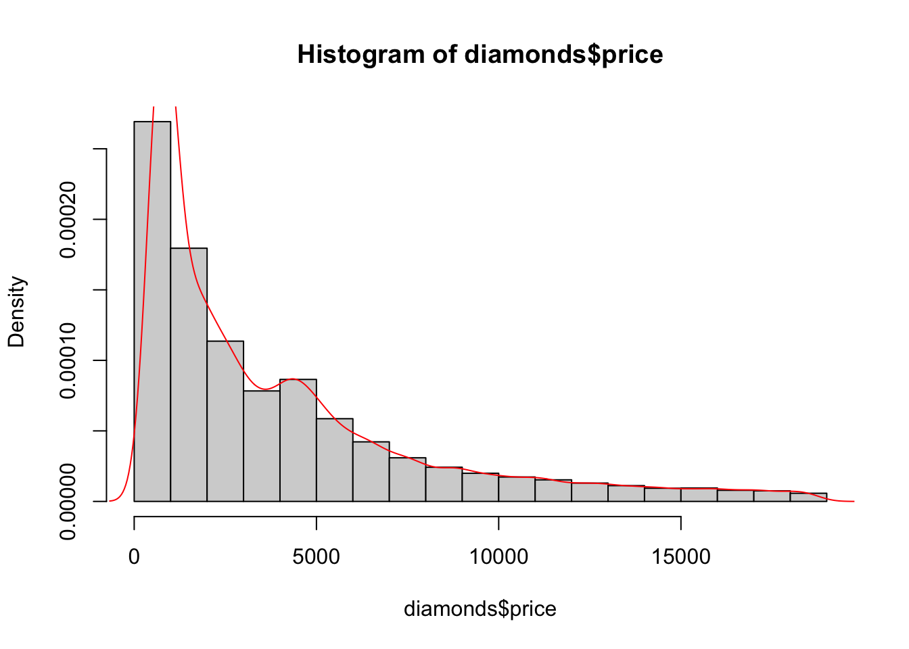
lasso = glmnet(x, y)
par(mfrow = c(1,2))
plot(lasso, xvar = 'lambda')
plot(lasso)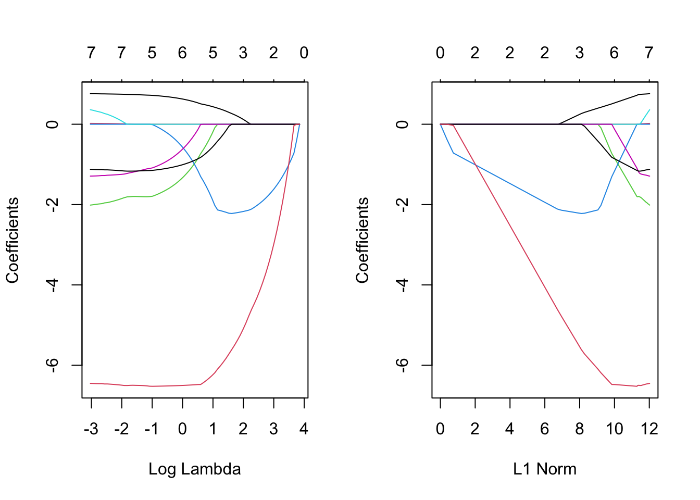
par(mfrow=c(1,1))
lasso$lambda## [1] 47.02272566 42.84535631 39.03909294 35.57096752 32.41094081 29.53164215
## [7] 26.90813246 24.51768813 22.33960429 20.35501542 18.54673195 16.89909140
## [13] 15.39782269 14.02992256 12.78354291 11.64788819 10.61312191 9.67028141
## [19] 8.81120026 8.02843751 7.31521325 6.66534987 6.07321856 5.53369056
## [25] 5.04209274 4.59416712 4.18603397 3.81415825 3.47531895 3.16658119
## [31] 2.88527084 2.62895133 2.39540254 2.18260158 1.98870527 1.81203418
## [37] 1.65105806 1.50438261 1.37073740 1.24896487 1.13801027 1.03691258
## [43] 0.94479612 0.86086304 0.78438634 0.71470362 0.65121132 0.59335950
## [49] 0.54064708 0.49261748 0.44885470 0.40897969 0.37264706 0.33954212
## [55] 0.30937814 0.28189383 0.25685116 0.23403321 0.21324235 0.19429849
## [61] 0.17703754 0.16131002 0.14697968 0.13392241 0.12202511 0.11118474
## [67] 0.10130739 0.09230752 0.08410718 0.07663533 0.06982726 0.06362399
## [73] 0.05797181 0.05282176 0.04812922lasso$beta## 8 x 75 sparse Matrix of class "dgCMatrix"## [[ suppressing 75 column names 's0', 's1', 's2' ... ]]##
## Age . . . . . . .
## Weight . . . . . . .
## HtShoes . . . . . . .
## Ht . -0.3788888 -0.71690000 -0.8815363 -1.031066 -1.168389 -1.292464
## Seated . . . . . . .
## Arm . . . . . . .
## Thigh . . . . . . .
## Leg . . -0.03001398 -0.5709448 -1.065255 -1.512438 -1.923026
##
## Age . . . . . . .
## Weight . . . . . . .
## HtShoes . . . . . . .
## Ht -1.406576 -1.509502 -1.604347 -1.689716 -1.768569 -1.839363 -1.904943
## Seated . . . . . . .
## Arm . . . . . . .
## Thigh . . . . . . .
## Leg -2.293971 -2.635099 -2.942743 -3.226199 -3.481281 -3.716848 -3.928280
##
## Age . . . . 0.03026313 0.07914329
## Weight . . . . . .
## HtShoes . . . . . .
## Ht -1.963641 -2.017036 -2.066746 -2.111083 -2.13956040 -2.15657249
## Seated . . . . . .
## Arm . . . . . .
## Thigh . . . . . .
## Leg -4.124080 -4.302752 -4.462389 -4.610703 -4.77565830 -4.94857151
##
## Age 0.123651 0.164252 0.2011991 0.2349099 0.2656318 0.29557296
## Weight . . . . . .
## HtShoes . . . . . .
## Ht -2.172738 -2.186422 -2.1999306 -2.2112247 -2.2213847 -2.21537008
## Seated . . . . . .
## Arm . . . . . .
## Thigh . . . . . -0.04904616
## Leg -5.104146 -5.249008 -5.3779072 -5.4983751 -5.6085302 -5.71786751
##
## Age 0.3254539 0.3526374 0.3774918 0.4000568 0.42215302 0.4425705
## Weight . . . . . .
## HtShoes . . . . -0.08747275 -0.2410930
## Ht -2.1919535 -2.1710512 -2.1509204 -2.1336034 -2.02086133 -1.8495163
## Seated . . . . . .
## Arm . . . . . .
## Thigh -0.1550600 -0.2512560 -0.3396447 -0.4194801 -0.50353183 -0.5808560
## Leg -5.8252121 -5.9220281 -6.0129224 -6.0932133 -6.18702261 -6.2568841
##
## Age 0.4611742 0.4781344 0.4935876 0.507660431 0.5325412 0.5538978
## Weight . . . . . .
## HtShoes -0.3810765 -0.5094711 -0.6264423 -0.732315652 -0.8541160 -0.9612630
## Ht -1.6933835 -1.5502583 -1.4198654 -1.301776165 -1.1523513 -1.0218632
## Seated . . . . . .
## Arm . . . -0.003724438 -0.1356874 -0.2445963
## Thigh -0.6513109 -0.7155662 -0.7741120 -0.825232452 -0.8617522 -0.8945363
## Leg -6.3205372 -6.3785468 -6.4314027 -6.478380251 -6.4798559 -6.4847698
##
## Age 0.5733715 0.5910974 0.6072458 0.6219709 0.6353911 0.6476155
## Weight . . . . . .
## HtShoes -1.0599721 -1.1485746 -1.2290941 -1.3032866 -1.3710911 -1.4325446
## Ht -0.9018626 -0.7938899 -0.6957256 -0.6054368 -0.5229599 -0.4481416
## Seated . . . . . .
## Arm -0.3438619 -0.4342699 -0.5166409 -0.5917202 -0.6601388 -0.7224752
## Thigh -0.9244800 -0.9516743 -0.9764387 -0.9990584 -1.0196829 -1.0384553
## Leg -6.4892510 -6.4933288 -6.4970433 -6.5004312 -6.5035202 -6.5063374
##
## Age 0.6587657 0.6689108 0.6781749 0.6865932 0.6942714 0.7012737
## Weight . . . . . .
## HtShoes -1.4893806 -1.5398858 -1.5875253 -1.6288279 -1.6673273 -1.7029099
## Ht -0.3791066 -0.3175022 -0.2597176 -0.2091840 -0.1622689 -0.1190003
## Seated . . . . . .
## Arm -0.7793014 -0.8310560 -0.8782503 -0.9212114 -0.9603579 -0.9960311
## Thigh -1.0556179 -1.0711783 -1.0854622 -1.0983601 -1.1101614 -1.1209538
## Leg -6.5089124 -6.5112740 -6.5134288 -6.5154515 -6.5172794 -6.5189702
##
## Age 0.70765527 0.71346592 0.7187507 0.7228005 0.7250685 0.7283275
## Weight . . . . . .
## HtShoes -1.73553063 -1.76517488 -1.7918480 -1.8012793 -1.8042393 -1.8036976
## Ht -0.07936592 -0.04332879 -0.0108381 . . .
## Seated . . . . . .
## Arm -1.02852223 -1.05809285 -1.0849764 -1.1006536 -1.1107097 -1.1284351
## Thigh -1.13080691 -1.13978543 -1.1479486 -1.1525898 -1.1535925 -1.1565048
## Leg -6.52053931 -6.52200063 -6.5233662 -6.5216161 -6.5131065 -6.5068898
##
## Age 0.731506 0.734511 0.737307 0.739810222 0.741186412 0.742529970
## Weight . . . 0.001075362 0.003693442 0.006652873
## HtShoes -1.802075 -1.800008 -1.797816 -1.798603166 -1.803557433 -1.808553585
## Ht . . . . . .
## Seated . . . . . 0.002378954
## Arm -1.145882 -1.162368 -1.177701 -1.194759877 -1.207604764 -1.224531973
## Thigh -1.159510 -1.162575 -1.165548 -1.166929365 -1.167273424 -1.167232842
## Leg -6.503318 -6.501111 -6.499640 -6.497567833 -6.499442317 -6.503591032
##
## Age 0.745354326 0.74742495 0.7490595 0.75051743 0.75188196 0.75309161
## Weight 0.008513292 0.01013531 0.0117728 0.01326849 0.01463865 0.01587222
## HtShoes -1.827269779 -1.85186185 -1.8757287 -1.89667200 -1.91673747 -1.93407617
## Ht . . . . . .
## Seated 0.040515474 0.08294766 0.1225952 0.15754489 0.19096305 0.21992109
## Arm -1.239936898 -1.24773622 -1.2530833 -1.25803785 -1.26232015 -1.26641490
## Thigh -1.163875042 -1.15825820 -1.1526247 -1.14780561 -1.14306697 -1.13909162
## Leg -6.502812684 -6.49475353 -6.4872853 -6.48122990 -6.47512351 -6.47010118
##
## Age 0.75422793 0.75592912 0.75628200 0.75774078 0.75870481 0.75951416
## Weight 0.01700937 0.01736582 0.01888635 0.01919551 0.01980897 0.02057163
## HtShoes -1.95075883 -1.95798264 -1.97774056 -1.98463485 -1.99295752 -2.00426952
## Ht . . . . . .
## Seated 0.24771599 0.26649454 0.29335360 0.31078418 0.32692789 0.34634309
## Arm -1.26997742 -1.27709493 -1.27745387 -1.28286904 -1.28666067 -1.28881721
## Thigh -1.13514900 -1.13506802 -1.12899125 -1.12874195 -1.12739244 -1.12473708
## Leg -6.46501672 -6.46519803 -6.45672861 -6.45697888 -6.45593029 -6.45313255
##
## Age 0.76009998
## Weight 0.02118573
## HtShoes -2.01275176
## Ht .
## Seated 0.36049535
## Arm -1.29085662
## Thigh -1.12283674
## Leg -6.45077390s <- apply(x, 2, sd) # calculates the column standard deviations
x.s <- sweep(x, 2, s, "/") # divides all columns by their standard deviations
seatpos.pr <- prcomp(x.s)
seatpos.pr## Standard deviations (1, .., p=8):
## [1] 2.38184501 1.11210881 0.68098711 0.49087508 0.44070349 0.37306059 0.22437586
## [8] 0.03985271
##
## Rotation (n x k) = (8 x 8):
## PC1 PC2 PC3 PC4 PC5 PC6
## Age -0.007219379 0.8763467 0.16383976 -0.16522774 -0.3349932 -0.25464449
## Weight -0.366979122 0.0448877 0.42981137 -0.60025209 0.5537489 0.09798202
## HtShoes -0.411460536 -0.1055831 0.03375209 0.02577245 -0.2204816 -0.05101900
## Ht -0.412057421 -0.1119799 0.01116858 0.02294603 -0.1887759 -0.04369735
## Seated -0.381270226 -0.2178995 0.17138740 -0.15033847 -0.6171009 0.23019712
## Arm -0.348771387 0.3742641 -0.01670980 0.55358297 0.2380225 0.60781701
## Thigh -0.327523319 0.1251793 -0.86246173 -0.31151283 0.1038969 -0.06344739
## Leg -0.389747512 -0.0555930 0.11688322 0.43024468 0.2205229 -0.70326773
## PC7 PC8
## Age 0.02269849 -0.015528966
## Weight -0.04435483 0.008082356
## HtShoes 0.53650776 0.691876699
## Ht 0.50884054 -0.721493879
## Seated -0.56689080 -0.002844309
## Arm -0.07347462 0.007539785
## Thigh -0.14492761 0.018814564
## Leg -0.32092126 0.005274142seatpos.pr$rotation[,1]## Age Weight HtShoes Ht Seated Arm
## -0.007219379 -0.366979122 -0.411460536 -0.412057421 -0.381270226 -0.348771387
## Thigh Leg
## -0.327523319 -0.389747512plot(seatpos.pr)
summary(seatpos.pr)## Importance of components:
## PC1 PC2 PC3 PC4 PC5 PC6 PC7
## Standard deviation 2.3818 1.1121 0.68099 0.49088 0.44070 0.3731 0.22438
## Proportion of Variance 0.7091 0.1546 0.05797 0.03012 0.02428 0.0174 0.00629
## Cumulative Proportion 0.7091 0.8638 0.92171 0.95183 0.97611 0.9935 0.99980
## PC8
## Standard deviation 0.03985
## Proportion of Variance 0.00020
## Cumulative Proportion 1.00000T <- t(seatpos.pr$x[,c(1,2,3,4)]) #compressed using 4 PCs
ms <- colMeans(x.s)
R <- t(ms + seatpos.pr$rot[,c(1,2,3,4)]%*% T) #reconstruction
plot(rbind(x.s[,1:2], R[,1:2]), pch=20, bty='l',col=c(rep(2,38),rep(4,38))) 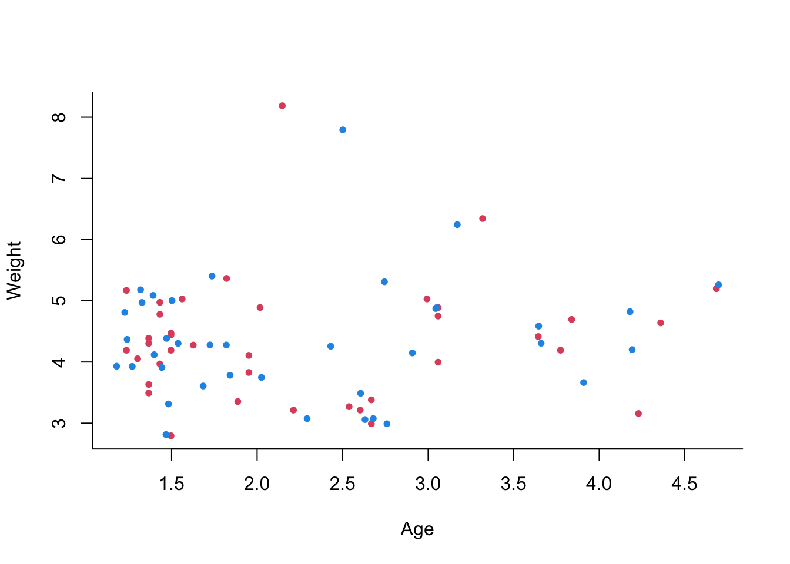
library("pls")## Warning: package 'pls' was built under R version 4.1.2##
## Attaching package: 'pls'## The following object is masked from 'package:corrplot':
##
## corrplot## The following object is masked from 'package:stats':
##
## loadingspcr.fit=pcr(hipcenter~., data=seatpos, scale = TRUE, validation = "CV" )
summary(pcr.fit)## Data: X dimension: 38 8
## Y dimension: 38 1
## Fit method: svdpc
## Number of components considered: 8
##
## VALIDATION: RMSEP
## Cross-validated using 10 random segments.
## (Intercept) 1 comps 2 comps 3 comps 4 comps 5 comps 6 comps
## CV 60.45 37.56 37.14 38.03 38.66 39.74 39.48
## adjCV 60.45 37.48 36.98 37.82 38.33 39.41 39.14
## 7 comps 8 comps
## CV 42.88 43.56
## adjCV 42.35 43.00
##
## TRAINING: % variance explained
## 1 comps 2 comps 3 comps 4 comps 5 comps 6 comps 7 comps
## X 70.91 86.37 92.17 95.18 97.61 99.35 99.98
## hipcenter 61.89 66.34 66.48 67.82 68.02 68.58 68.63
## 8 comps
## X 100.00
## hipcenter 68.66validationplot( pcr.fit, val.type = 'MSEP' )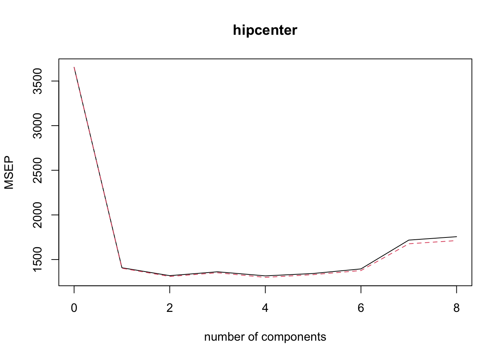
coef(pcr.fit, ncomp = 2)## , , 2 comps
##
## hipcenter
## Age 9.779064
## Weight -6.721580
## HtShoes -9.301406
## Ht -9.385585
## Seated -9.978190
## Arm -2.633940
## Thigh -5.035274
## Leg -8.307696library(leaps)
predict.regsubsets = function(object, newdata, id, ...){
form = as.formula(object$call[[2]])
mat = model.matrix(form, newdata)
coefi = coef(object, id = id)
xvars = names(coefi)
mat[, xvars]%*%coefi
}
repetitions = 100
cor.bss = c()
cor.ridge = c()
cor.lasso = c()
cor.pcr = c()
set.seed(1)
for(i in 1:repetitions){
# Step (i) data splitting
training.obs = sample(1:38, 28)
y.train = seatpos$hipcenter[training.obs]
x.train = model.matrix(hipcenter~., seatpos[training.obs, ])[,-1]
y.test = seatpos$hipcenter[-training.obs]
x.test = model.matrix(hipcenter~., seatpos[-training.obs, ])[,-1]
# Step (ii) training phase
bss.train = regsubsets(hipcenter~., data=seatpos[training.obs,], nvmax=8)
min.cp = which.min(summary(bss.train)$cp)
ridge.train = cv.glmnet(x.train, y.train, alpha = 0, nfolds = 5)
lasso.train = cv.glmnet(x.train, y.train, nfold = 5)
pcr.train = pcr(hipcenter~., data =seatpos[training.obs,],
scale = TRUE, validation="CV")
min.pcr = which.min(MSEP(pcr.train)$val[1,1, ] ) - 1
# Step (iii) generating predictions
predict.bss = predict.regsubsets(bss.train, seatpos[-training.obs, ], min.cp)
predict.ridge = predict(ridge.train, x.test, s = 'lambda.min')
predict.lasso = predict(lasso.train, x.test, s = 'lambda.min')
predict.pcr = predict(pcr.train,seatpos[-training.obs, ], ncomp = min.pcr )
# Step (iv) evaluating predictive performance
cor.bss[i] = cor(y.test, predict.bss)
cor.ridge[i] = cor(y.test, predict.ridge)
cor.lasso[i] = cor(y.test, predict.lasso)
cor.pcr[i] = cor(y.test, predict.pcr)
}
# Plot the resulting correlations as boxplots.
boxplot(cor.bss, cor.ridge, cor.lasso, cor.pcr,
names = c('BSS','Ridge', 'Lasso', 'PCR'),
ylab = 'Test correlation', col = 2:5)Practical 4
library("MASS")## Warning: package 'MASS' was built under R version 4.1.2library("faraway")
y = seatpos$hipcenter
x = seatpos$Ht
y.lab = 'hip center (mm)'
x.lab = 'Height (bare foot) in cm'
plot( x, y, cex.lab = 1.1, col="darkgrey", xlab = x.lab, ylab = y.lab,
main = "", bty = 'l', pch = 16 )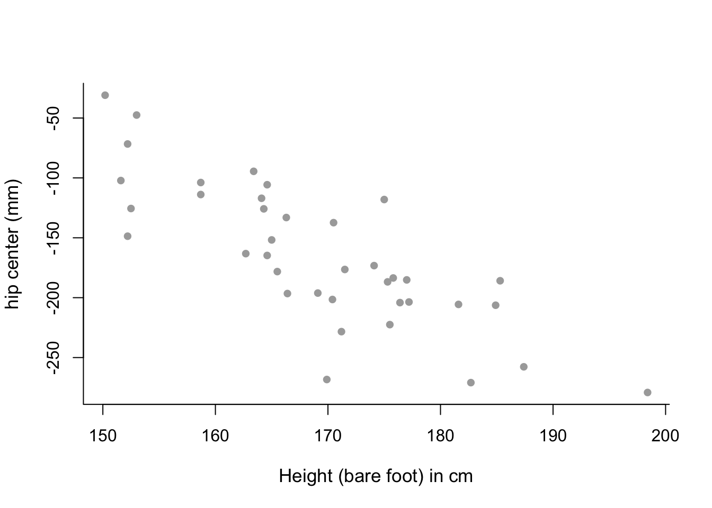
poly1 = lm(y ~ poly(x, 1))
summary(poly1)##
## Call:
## lm(formula = y ~ poly(x, 1))
##
## Residuals:
## Min 1Q Median 3Q Max
## -99.956 -27.850 5.656 20.883 72.066
##
## Coefficients:
## Estimate Std. Error t value Pr(>|t|)
## (Intercept) -164.88 5.90 -27.95 < 2e-16 ***
## poly(x, 1) -289.87 36.37 -7.97 1.83e-09 ***
## ---
## Signif. codes: 0 '***' 0.001 '**' 0.01 '*' 0.05 '.' 0.1 ' ' 1
##
## Residual standard error: 36.37 on 36 degrees of freedom
## Multiple R-squared: 0.6383, Adjusted R-squared: 0.6282
## F-statistic: 63.53 on 1 and 36 DF, p-value: 1.831e-09poly2 = lm(y ~ poly(x, 2))
summary(poly2)##
## Call:
## lm(formula = y ~ poly(x, 2))
##
## Residuals:
## Min 1Q Median 3Q Max
## -96.068 -25.018 4.418 22.790 75.322
##
## Coefficients:
## Estimate Std. Error t value Pr(>|t|)
## (Intercept) -164.885 5.919 -27.855 < 2e-16 ***
## poly(x, 2)1 -289.868 36.490 -7.944 2.42e-09 ***
## poly(x, 2)2 31.822 36.490 0.872 0.389
## ---
## Signif. codes: 0 '***' 0.001 '**' 0.01 '*' 0.05 '.' 0.1 ' ' 1
##
## Residual standard error: 36.49 on 35 degrees of freedom
## Multiple R-squared: 0.646, Adjusted R-squared: 0.6257
## F-statistic: 31.93 on 2 and 35 DF, p-value: 1.282e-08grid = seq(min(x), max(x), length.out = 1000)
pred1 = predict(poly1, newdata = list(x = grid), se = TRUE)
pred2 = predict(poly2, newdata = list(x = grid), se = TRUE)
# Confidence interval bands.
se.bands1 = cbind( pred1$fit - 2*pred1$se.fit, pred1$fit + 2*pred1$se.fit )
se.bands2 = cbind( pred2$fit - 2*pred2$se.fit, pred2$fit + 2*pred2$se.fit )
# Plot both plots on a single graphics device.
par(mfrow = c(1,2))
# Degree-1 polynomial plot.
plot(x, y, cex.lab = 1.1, col="darkgrey", xlab = x.lab, ylab = y.lab,
main = "Degree-1 polynomial", bty = 'l', pch=20)
lines(grid, pred1$fit, lwd = 2, col = "red")
matlines(grid, se.bands1, lwd = 2, col = "red", lty = 3)
# Degree-2 polynomial plot.
plot(x, y, cex.lab = 1.1, col="darkgrey", xlab = x.lab, ylab = y.lab,
main = "Degree-2 polynomial", bty = 'l', pch=20)
lines(grid, pred2$fit, lwd = 2, col = "red")
matlines(grid, se.bands2, lwd = 2, col = "red", lty = 3)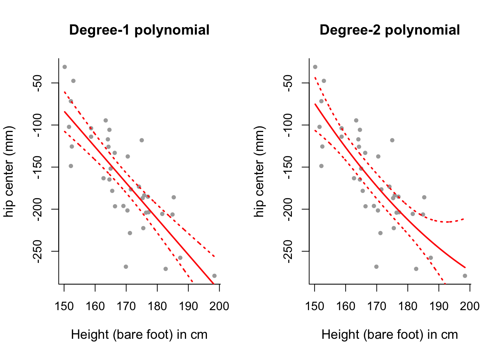
par(mfrow=c(1,1))
step6 = lm(y ~ cut(x, 6))
pred6 = predict(step6, newdata = list(x = grid), se = TRUE)
se.bands6 = cbind(pred6$fit + 2*pred6$se.fit, pred6$fit-2*pred6$se.fit)
# Plot the results.
plot(x, y, cex.lab = 1.1, col="darkgrey", xlab = x.lab, ylab = y.lab,
main = "5 cutpoints", bty = 'l', pch=16)
lines(grid, pred6$fit, lwd = 2, col = "red")
matlines(grid, se.bands6, lwd = 1.4, col = "red", lty = 3)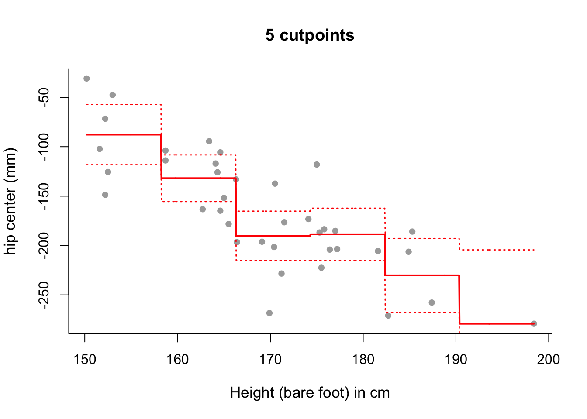
summary(step6)##
## Call:
## lm(formula = y ~ cut(x, 6))
##
## Residuals:
## Min 1Q Median 3Q Max
## -78.209 -25.615 0.936 22.425 70.623
##
## Coefficients:
## Estimate Std. Error t value Pr(>|t|)
## (Intercept) -87.76 15.25 -5.753 2.22e-06 ***
## cut(x, 6)(158,166] -44.11 19.29 -2.286 0.029 *
## cut(x, 6)(166,174] -102.35 19.69 -5.197 1.12e-05 ***
## cut(x, 6)(174,182] -100.91 20.18 -5.001 1.98e-05 ***
## cut(x, 6)(182,190] -142.44 24.12 -5.906 1.43e-06 ***
## cut(x, 6)(190,198] -191.39 40.36 -4.742 4.20e-05 ***
## ---
## Signif. codes: 0 '***' 0.001 '**' 0.01 '*' 0.05 '.' 0.1 ' ' 1
##
## Residual standard error: 37.36 on 32 degrees of freedom
## Multiple R-squared: 0.6606, Adjusted R-squared: 0.6076
## F-statistic: 12.46 on 5 and 32 DF, p-value: 9.372e-07summary(x)## Min. 1st Qu. Median Mean 3rd Qu. Max.
## 150.2 163.6 169.5 169.1 175.7 198.4cuts <- summary(x)[c(2,3,5)]
library("splines")
spline1 = lm(y ~ bs(x, degree = 1, knots = cuts))
grid.x = seq(min(x), max(x), length.out = 100)
pred1 = predict(spline1, newdata = list(x = grid.x), se = TRUE)
se.bands1 = cbind(pred1$fit + 2 * pred1$se.fit, pred1$fit - 2 * pred1$se.fit)
plot(x, y, cex.lab = 1.1, col="darkgrey", xlab = x.lab, ylab = y.lab,
main = "Linear Spline", bty = 'l', pch = 16)
lines(grid.x, pred1$fit, lwd = 2, col = "red")
matlines(grid.x, se.bands1, lwd = 2, col = "red", lty = 3)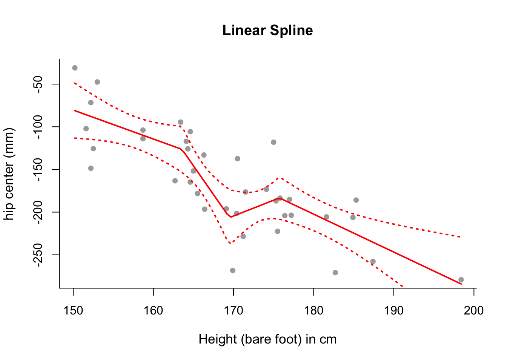
smooth1 = smooth.spline(x, y, df = 3)
plot(x, y, cex.lab = 1.1, col="darkgrey", xlab = x.lab, ylab = y.lab,
main = "Smoothing Spline (3df)", bty = 'l', pch=16)
lines(smooth1, lwd = 2, col = "brown")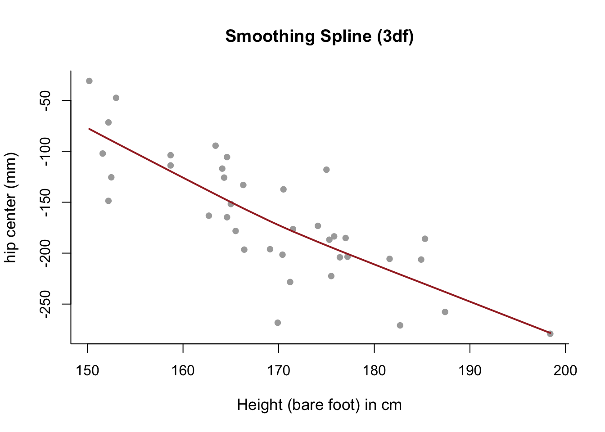
library(gam)## Warning: package 'gam' was built under R version 4.1.2## Loading required package: foreach## Warning: package 'foreach' was built under R version 4.1.2## Loaded gam 1.22gam = gam( hipcenter ~ ns( Age, df = 5 ) + s( Thigh, df = 3 ) + Ht,
data = seatpos )
par( mfrow = c(2,3) )
plot( gam, se = TRUE, col = "blue" )
plot( seatpos$Age, seatpos$hipcenter, pch = 16, col = 2,
ylab = y.lab, xlab = "Age (years)" )
plot( seatpos$Thigh, seatpos$hipcenter, pch = 16, col = 2,
ylab = y.lab, xlab = "Thigh length (cm)" )
plot( seatpos$Ht, seatpos$hipcenter, pch = 16, col = 2,
ylab = y.lab, xlab = "Ht (bare foot) (cm)" )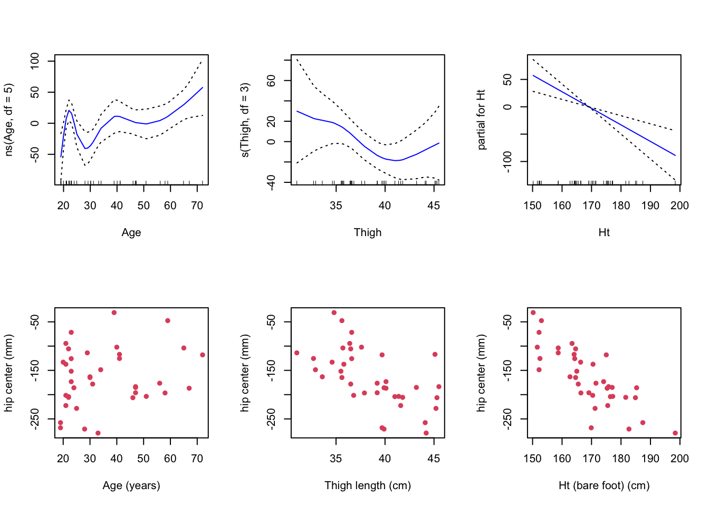
par(mfrow=c(1,1))
library("MASS")
library(splines)
y = Boston$medv
x = Boston$indus
y.lab = 'Median Property Value'
x.lab = 'Non-retail business acres per town'
summary(x)## Min. 1st Qu. Median Mean 3rd Qu. Max.
## 0.46 5.19 9.69 11.14 18.10 27.74cuts <- summary(x)[c(2,3,5)]
cuts## 1st Qu. Median 3rd Qu.
## 5.19 9.69 18.10grid.x = seq(min(x), max(x), length.out = 100)
# Fit a cubic spline
spline.bs = lm(y ~ bs(x, knots = cuts))
pred.bs = predict(spline.bs, newdata = list(x = grid.x), se = TRUE)
se.bands.bs = cbind(pred.bs$fit + 2 * pred.bs$se.fit,
pred.bs$fit - 2 * pred.bs$se.fit)
# Fit a natural cubic spline.
spline.ns = lm(y ~ ns(x, knots = cuts))
pred.ns = predict(spline.ns, newdata = list(x = grid.x), se = TRUE)
se.bands.ns = cbind(pred.ns$fit + 2 * pred.ns$se.fit,
pred.ns$fit - 2 * pred.ns$se.fit)
# Fit a smoothing spline, with 3 effective degrees of freedom.
spline.smooth = smooth.spline(x, y, df = 3)
# Split the plotting device into 3.
par(mfrow = c(1,3))
# Plot the cubic spline.
plot(x, y, cex.lab = 1.1, col="darkgrey", xlab = x.lab, ylab = y.lab,
main = "Cubic Spline", bty = 'l')
lines(grid.x, pred.bs$fit, lwd = 2, col = "red")
matlines(grid.x, se.bands.bs, lwd = 2, col = "red", lty = 3)
# Plot the natural cubic spline.
plot(x, y, cex.lab = 1.1, col="darkgrey", xlab = x.lab, ylab = y.lab,
main = "Natural Cubic Spline", bty = 'l')
lines(grid.x, pred.ns$fit, lwd = 2, col = "darkred")
matlines(grid.x, se.bands.ns, lwd = 2, col = "darkred", lty = 3)
# Plot the smoothing spline.
plot(x, y, cex.lab = 1.1, col="darkgrey", xlab = x.lab, ylab = y.lab,
main = "Smoothing Spline (3 df)", bty = 'l')
lines(spline.smooth, lwd = 2, col = "brown")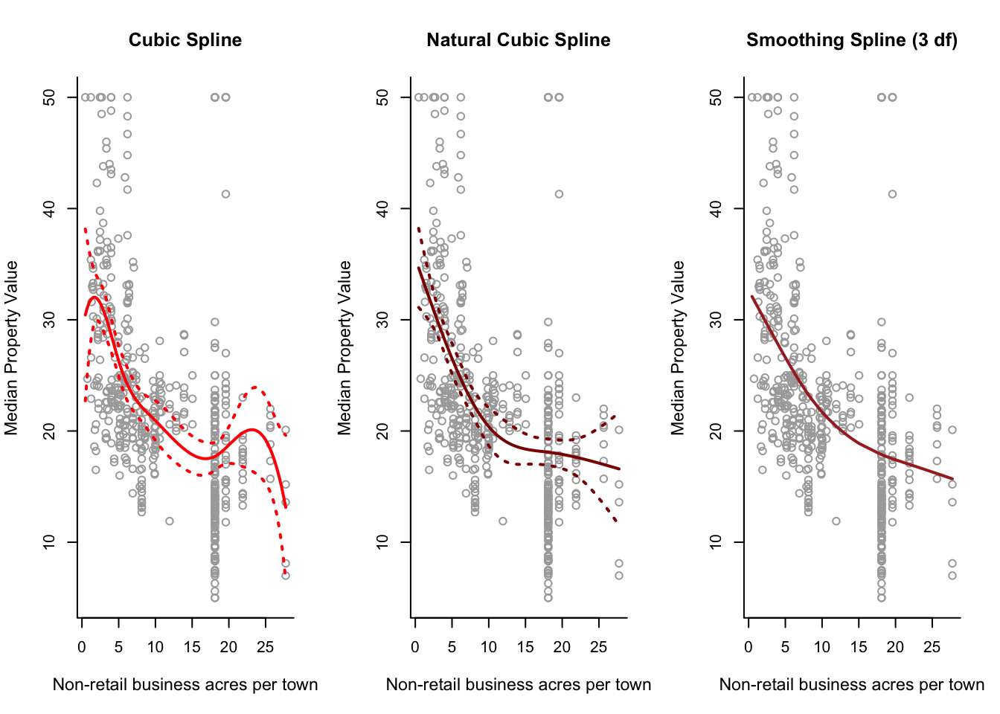
Boston1 = Boston
Boston1$chas = factor(Boston1$chas)
gam1 = gam( medv ~ ns( lstat, df = 5 ) + ns( nox, df = 7 ) +
s( indus, df = 7 ) + poly( age, 5 ) + chas, data = Boston1 )
par(mfrow = c(2,3))
plot(gam1, se = TRUE, col = "blue")
admit <- read.csv("https://www.maths.dur.ac.uk/users/hailiang.du/data/admit.csv")
head(admit)## admit gre gpa rank
## 1 0 380 3.61 3
## 2 1 660 3.67 3
## 3 1 800 4.00 1
## 4 1 640 3.19 4
## 5 0 520 2.93 4
## 6 1 760 3.00 2summary(admit)## admit gre gpa rank
## Min. :0.0000 Min. :220.0 Min. :2.260 Min. :1.000
## 1st Qu.:0.0000 1st Qu.:520.0 1st Qu.:3.130 1st Qu.:2.000
## Median :0.0000 Median :580.0 Median :3.395 Median :2.000
## Mean :0.3175 Mean :587.7 Mean :3.390 Mean :2.485
## 3rd Qu.:1.0000 3rd Qu.:660.0 3rd Qu.:3.670 3rd Qu.:3.000
## Max. :1.0000 Max. :800.0 Max. :4.000 Max. :4.000pairs(admit[,2:4], col=admit[,1]+2, pch=20)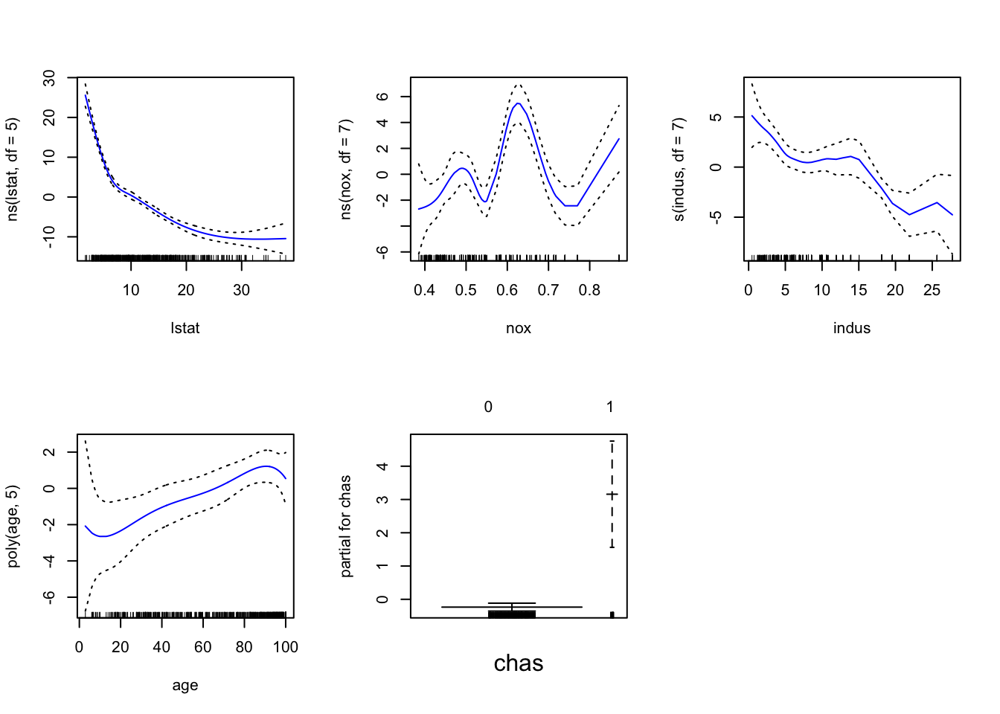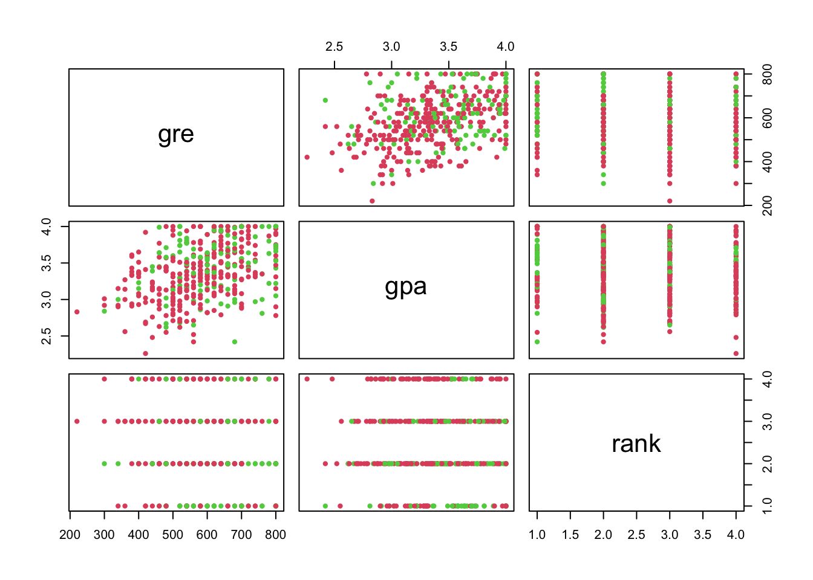
admit$rank <- factor(admit$rank)
glm.fit = glm(admit ~ ., data=admit, family="binomial")
summary(glm.fit)##
## Call:
## glm(formula = admit ~ ., family = "binomial", data = admit)
##
## Deviance Residuals:
## Min 1Q Median 3Q Max
## -1.6268 -0.8662 -0.6388 1.1490 2.0790
##
## Coefficients:
## Estimate Std. Error z value Pr(>|z|)
## (Intercept) -3.989979 1.139951 -3.500 0.000465 ***
## gre 0.002264 0.001094 2.070 0.038465 *
## gpa 0.804038 0.331819 2.423 0.015388 *
## rank2 -0.675443 0.316490 -2.134 0.032829 *
## rank3 -1.340204 0.345306 -3.881 0.000104 ***
## rank4 -1.551464 0.417832 -3.713 0.000205 ***
## ---
## Signif. codes: 0 '***' 0.001 '**' 0.01 '*' 0.05 '.' 0.1 ' ' 1
##
## (Dispersion parameter for binomial family taken to be 1)
##
## Null deviance: 499.98 on 399 degrees of freedom
## Residual deviance: 458.52 on 394 degrees of freedom
## AIC: 470.52
##
## Number of Fisher Scoring iterations: 4glm.probs <- predict(glm.fit, type = "response")
glm.probs[1:10]## 1 2 3 4 5 6 7 8
## 0.1726265 0.2921750 0.7384082 0.1783846 0.1183539 0.3699699 0.4192462 0.2170033
## 9 10
## 0.2007352 0.5178682glm.pred=rep(0, 400)
glm.pred[glm.probs > .5] = 1
table(glm.pred, admit$admit)##
## glm.pred 0 1
## 0 254 97
## 1 19 30(254 + 30) / 400## [1] 0.71mean(glm.pred == admit$admit)## [1] 0.71